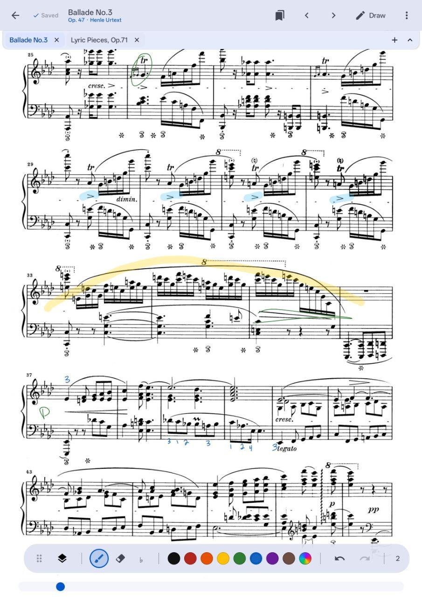
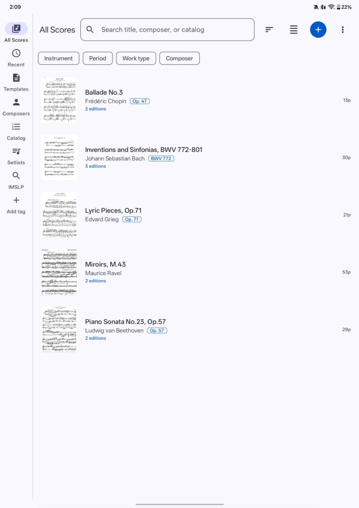
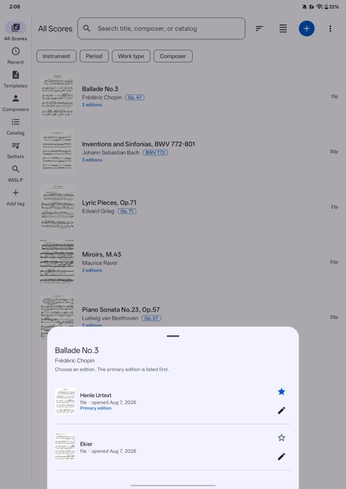
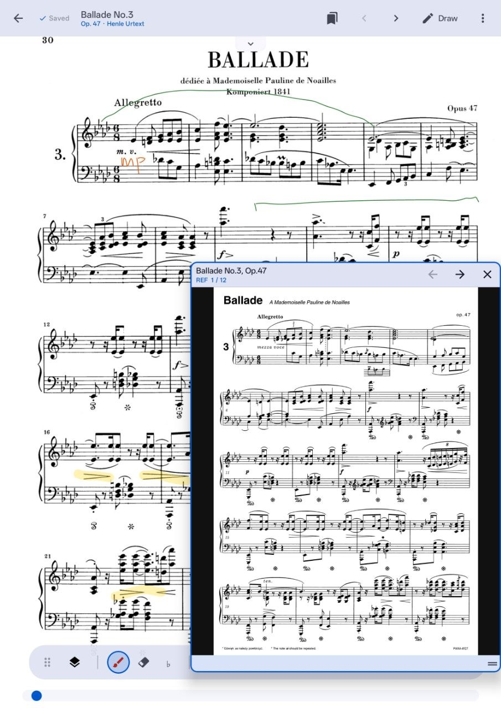
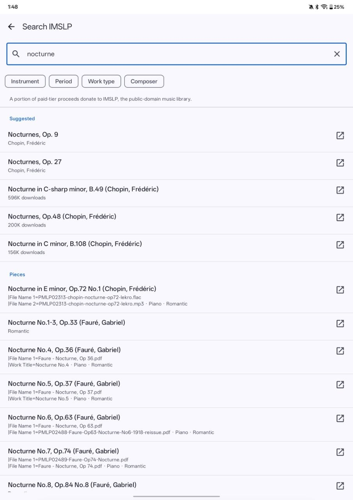
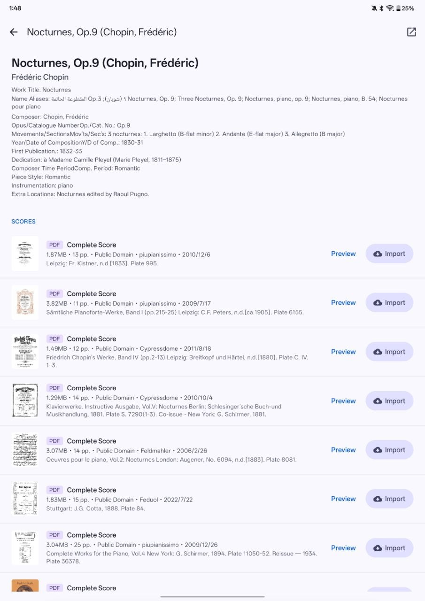
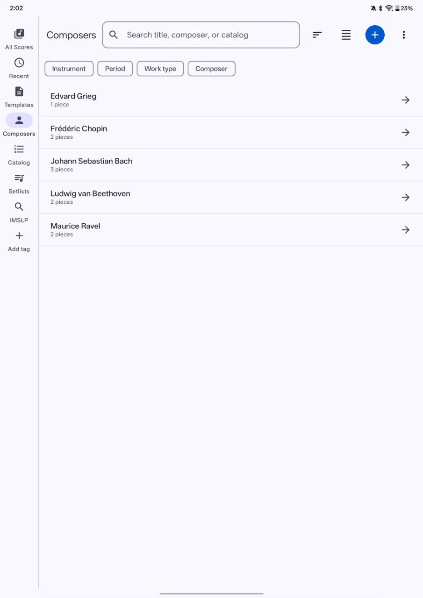

Android score viewer · version 1.21
A score library for serious musicians.
Partita is an Android score library and annotation workspace for conservatory students and professional musicians.
PDF library Annotations Android 8.0+

The Partita workflow
A library, reader, and annotation workspace.
Partita keeps the practical parts of score work together: find a piece, choose an edition, make a mark, and return to the same page later.

All Scores · search · filters
Know where the music is.
A library should help a musician think in works and repertoire, not filenames. Search by title, composer, or catalog number, then narrow the view by instrument, period, work type, or composer.
- Keep multiple editions grouped under the same work.
- Return to recent scores without rebuilding your context.
- Organize a working library around the way you actually study.
Score reader · draw · saved annotations
Turn a page into a working document.
Make the fingering, phrase mark, reminder, or rehearsal cue where the music is. Partita’s annotation tools are designed for quick practice decisions and durable score context.
- Use pen, highlighter, color, erasing, and undo without leaving the score.
- Keep marks available the next time you open the piece.
- Use layers to separate personal practice from clean reference material.
Score context
Compare editions without losing the work.
Urtext, teacher-marked copy, performance edition—serious repertoire often needs more than one view. Partita keeps editions together and lets a reference page sit beside the score you are currently studying.
- Choose a primary edition while keeping alternatives close.
- Open a reference score without abandoning the current page.




Find the work, then choose the right source.
Repertoire discovery is part of the musician’s job. Partita connects IMSLP browsing with a structured view of works, editions, and public-domain scores so that finding the next piece does not mean starting over in another app.
- Browse suggested works and search results in one place.
- Review edition details before adding a score to the library.
Browse repertoire by composer, not by filename.
A repertoire library often starts with a composer, a period, or a course list. Partita gives those relationships a visible place, making it easier to move from a broad repertoire view to the exact piece you want to teach or practice.

Current Android preview
Try Partita with your next score.
The current build is distributed directly while public-release testing continues. Download it, import a PDF, and see how your repertoire feels when the library is built around the work.
Partita 1.21 · build 10
Download Partita 1.21 View SHA-256 checksumAndroid may ask you to allow installs from your browser or Files app. Build verified August 9, 2026.
SHA-256
9f5fba20af9eec15198a224856c11684e7439c108f2482c2ce21e2d0befed32c